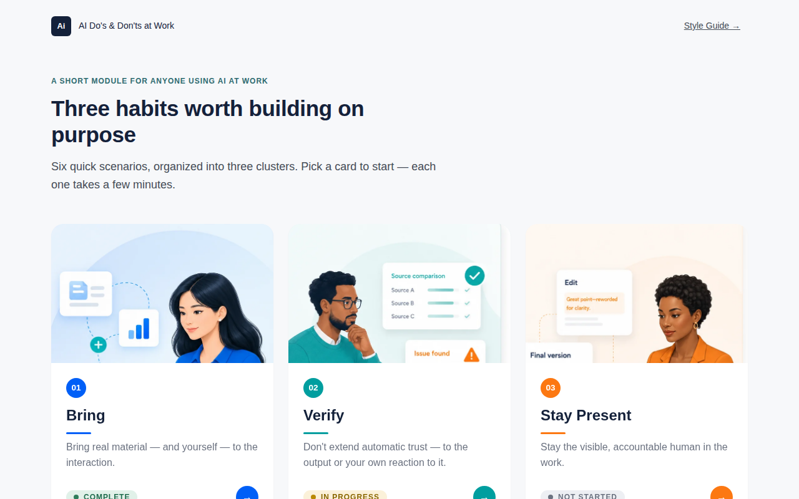
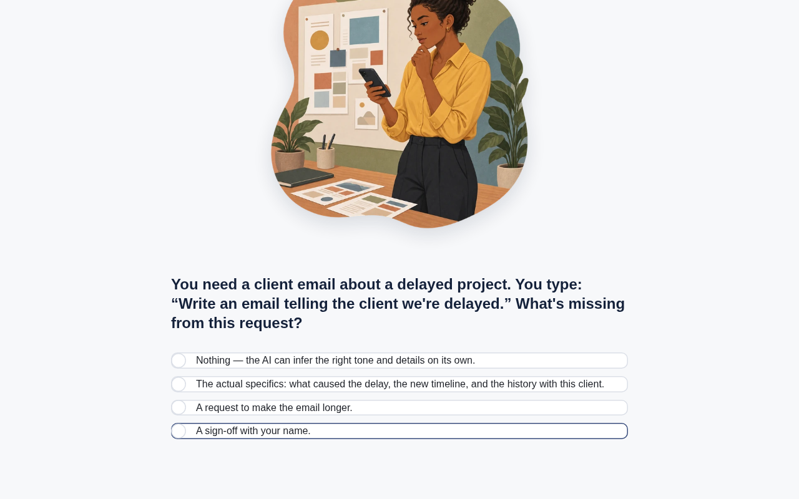

AI Do’s & Don’ts at Work
A short scenario-based module for anyone using AI tools on the job — built around three habits worth doing on purpose, not a policy document nobody reads.
The problem
Most “use AI responsibly” guidance at work is a static list of dos and don’ts — read once, retained never. It tells people what to believe about AI tools without ever putting them in a moment where they have to apply it. The habits that actually matter (bringing real context, checking what comes back, staying accountable for the result) are practiced in the moment or not at all.
What I did
I built a short, self-contained module organized around three clusters — Bring, Verify, and Stay Present — each grounded in a realistic workplace moment (drafting a client email, comparing AI-generated sources, editing a “final” draft). Every cluster follows the same beat: a short explainer, then a scenario question with plausible wrong answers, then feedback that explains why — not just whether the choice was right.
Underneath the module is a small design system: tokens for color, type, and spacing; documented components; motion specs (built with GSAP); and an interaction-states reference — all pulled from the same CSS the module actually runs on, not a separate brand exercise. I also built a companion Activity Builder that assembles new self-contained activities from the same components, so the pattern isn’t locked to this one module.
The outcome
A live, fully built six-scenario module with real corrective feedback on every question, plus the design system and builder tool that make the pattern reusable for the next activity. No build step, no framework — vanilla HTML/CSS/JS with GSAP for motion.

